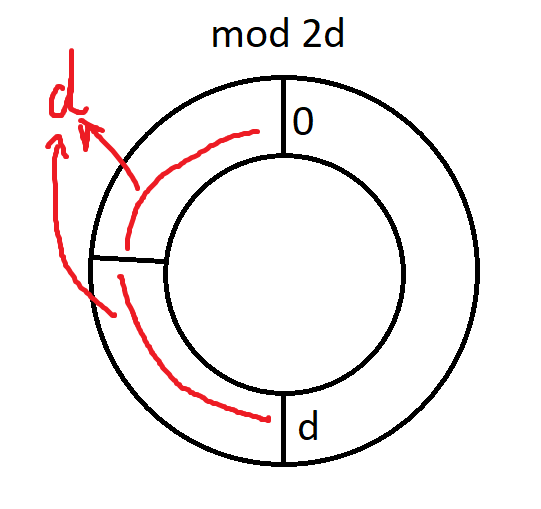

AGC066 赛后总结
比赛链接：https://atcoder.jp/contests/agc066/tasks
别TM出你那构造了，我TM真的要做吐了。
A Adjacent Difference
题目链接：https://atcoder.jp/contests/agc066/tasks/agc066_a
题目大意：给一个 $n*n$ 的方阵，给一个数字增减 $x$ 的代价是 $|x|$ ，然后给出一种方案使得相邻数字差距 $\ge d$ ，同时代价 $\le \frac{dn^2}{2}$ 。
做法
一个经典的思考模型：由一般到特殊。
如果 $d=1$ 怎么做？
我当时的想法是：奇数格子跑奇数或这偶数，偶数格子跑另外一类。
如果所有数字在 $[0,d]$ 内，怎么做？
我当时的想法是：奇数格子跑 $0$ 或者 $d$ ，偶数格子跑另外一类。
这都指向了一个想法：奇数格跑向最近的 $0/d \mod{2d}$ ，然后偶数格子跑向另外一个。
至于证明，同样从一般到特殊，考虑上面两个问题，都是两种情况的和为 $dn^2$ ，则必定有一个 $\le \frac{dn^2}{2}$ 。
这个想法的证明也类似，不难发现，问题等价于：给偶数格子的值 $-d$ ，然后问所有格子最近的到 $0/d \mod{2d}$ ，是否有一种可能使得代价 $\le \frac{dn^2}{2}$ 。
不难发现，一个数字到达最近的 $0/d \mod{2d}$ ，两种情况的距离和是 $d$ 的，因此两种情况的代价是 $dn^2$ ，因此必定有一个情况 $\le \frac{dn^2}{2}$ ，证毕。
一个比较形象的图：

时间复杂度：$O(n^2)$ 。
1 |
|
其实感觉想的还是慢了点，感觉还能再快一点的。
B Decreasing Digit Sums
题目链接：https://atcoder.jp/contests/agc066/tasks/agc066_b
题目大意：给一个长度不超过 $9999$ 的数字，满足乘 $50$ 次 $2$ 时每次乘之后数位和都严格下降。
做法
非常有意思的题目，有时候来这么几道确实能开阔视野，但是考场时恶心我也确实有一手。
首先注意到一个事情：$5$ 乘 $2$ 后会变成 $10$ ，不影响数位和，也就是对于 $5x$ ，在乘 $2$ 后变成 $10x$ ，等价于 $x$ ，也就是乘 $2$ 后数字反而减小了，那么直接搞一个 $5^50$ ，最后直接减小到 $1$ 。
但是数字在减小不代表数字的数位和在减少，事实也确实如此，那么怎么搞呢？
考虑 $n*5^{50}$ ，如果 $5x\le y$ ，虽然 $x$ 的数位和可能大于等于 $y$ ，但是 $nx$ 与 $ny$ 在 $n$ 不断变化时的平均值应该是满足：$nx\le ny$ 的。
因此，直接将不同的 $n$ 得到的 $n*5^{50}$ 拼在一起即可。
1 |
|
反思
特有的没做题，看题解后开始马后炮反思。
思考是否是一些显性的数字组合，例如 ：5555，这种。
否决理由：可以控制很小的 $n$ ，但是 $n$ 比较大时根本控制不住。
特别发现： $9999…999$ ，只要 $n$ 的数量级小于位数的数量级，则位数和不变。
思考是否是分段加循环节，忽略一些小量的变化。
否决理由：循环起来可以发现平均变化量为 $0$ ，那么最终影响减小的还是总变化量。
开始思考可能是一些会损耗的构造，突然发现 $5*2=10$ ，逐步接近正解。
但以为是 $5^k$ 里面存在一段 $[l,r]$ 纯递增。
否决理由：试了，不存在这样的 $[l,r]$ 。
难道是 $n*5^k$ ？最接近正解的一集，可惜思维困在了找 $[l,r]$ 。
否决理由：试了，找不到。
难道不是 $5^k$ ，而是其他幂次，比如 $2^k$ ？。
否决理由：没找到，发现这么想其实已经和乱试没什么区别了，纯纯没有道理。
思考是否是搞几个串，不同的 $n$ 增量不同，然后列个方程，找个可行解。
否决理由：怎么判断方程是否有解，又怎么找到有解的方程。
回到第 $2$ 点，难道是列一堆状态，然后不同状态之间相互联动，然后用算法找一下可行解？
否决理由：根本没想出来个所以然，其实这个时候也知道这样想希望不大，没有正解的感觉，但也没有新的点子了。
- 投降，看题解，膜拜。
回顾整个过程，其实可以发现做法就是 $3,4,6$ 的组合，但唯独就是没有想到小的数字虽然数位和不一定小，但是在乘 $n$ 后的平均值感觉上是小的。
回顾一下过程：
$1,2$ 步我认为是我目前必须经历的过程，尝试解法是很正常的，但重要的是要在更加短的时间否定这些想法，当能够大致的给出一个想法不对的点的时候，就应该去尝试想想其他想法了。
$3,4,6$ 步我认为没有问题，有一些新的想法是好事。
$5$ 纯粹的乱试，不过赛场也确实没有花太多时间在这一点上。
$7$ 的时候已经黔驴技穷了，也不知道自己在干嘛了，但又必须经历，感觉变强的过程就是在一步步经历 $7$ 的过程中，突然想到可以这么干的过程。但其实也不能硬撑，如果经历 $7$ 一段时间后还没想到新的点子（大概是半个小时到两个小时左右），大概率就是超能力范围了，这个时候硬想基本上是浪费时间，不如直接看题解，我认为在自己最困惑的时候，学习一下别人是怎么解决自己的困惑，是进步最快的方法。
当然，如果赛时进入 $7$ 阶段一小段时间的话，直接跳题才是收益最大化的选择，毕竟这场的 $E$ 我觉得不是不能做的，多一种选择就多一种可能。
怎么更快的想出这道题呢？关键的两点：
- $2*5=10$ 。（就算再难的构造也要有些比较关键的小性质，而注意到 $5$ 因子能够让数字“从小变大”变成“由大变小”是这道题目一个关键的突破。）
- 感觉上如果 $x<y$ ，那么 $nx$ 和 $ny$ 的数位和的平均值应该会满足 $nx < ny$ ，在有足够多且随机的 $n$ 时。（这个性质能够很好的利用 $5$ 由大变小的性质，并通过此题）
提升“感觉”思维是我下次能够且更快做出这一类题目的关键。
C
题目大意：给一个只有 $A,B$ 的字符串，每次只能删除 $AAB$ 或者 $BAA$ ，问最多删除多少次。
我的做法
首先注意到一个事情，题目不能删除 $ABA$ 的字符串，这意味着单个的 $A$ 有可能被浪费，所以这道题目的核心就是如何减少 $A$ 的浪费。
在足够的思考后，观察到这么一个性质：如果把 $A$ 看成 $1$ ，$B$ 看成 $-2$ ，如果一个子串的和 $>0$ ，那么这个子串一定可以变成一串 $A$ 。
原因是如果不是一串 $A$，最终一定是 $AB…BAB…BA…$ ，那么一定是 $\le 0$ 的。
因此这样合并条件就有了。
因此我们能够将原问题用该问题表示：用一些不相交的段覆盖所有的 $+1$ ，要求段的和 $>0$，然后浪费的 $A$ 为和为奇数的段，最小化浪费。
这个时候其实已经可以 $dp$ 了。
使用某种数据结构维护一下转移过程就能 $O(n\log{n})$ 。
同时注意到，如果 $x\to x+2k$ ，那么一定有 $x\to x+2 \to x+2k$ ，因此转移能只从 $x-1,x-2$ 转移过来，时间复杂度：$O(n)$ 。
不过当时我没意识到到这就已经做完了，发现一个很自然的事情：如果和为奇数，代表可能有浪费，和为偶数，代表没有浪费，因此我们总是希望和为奇数，这个时候就很自然会想，奇数能不能分成两段 $>0$ ？
答案是可以，对于一段我们先将正数合并，负数合并，两端是正数，然后从左边一段正数开始，然后另外一段是去掉下一段负数的右边，然后如果右边 $<0$ ，那么左边的和大于中间负数段的绝对值，那么可以将左边往右推一格，由于最后会推到右边只有正数，所以一定存在一个时刻，左右两端都是正数，证毕。
因此，一段长度 $\ge 2$ 的 $>0$ 一定能分成两段 $>0$ ，综上，和为奇数的一定能分成一段奇数，一段偶数，所以奇数的长度可以至多为 $1$ 。
这样就得到了我的最终做法。
时间复杂度：$O(n)$ 。
1 |
|
$O(n\log{n})$ 版的代码：
1 |
|
反思
想题过程：
- 发现奇数个 $A$ 与浪费。
开始思考合并 $A$ 的条件，觉得可能和和有关。
否决理由：发现 $sum=0$ 时可以 $ABA$ 是反例。
- 开始思考能不能调整合并顺序。
- 发现非奇数的段可以直接与两端的最短的负数段合并，问题变成考虑奇数-负数-奇数-负数 … 。
- 手玩突然发现 $>0$ 是充要条件。
- 证明分割的那个定理。
- 得到做法。
- 看题解发现可以线性，回来将自己的做法优化到线性。
感觉这次想题的问题不大，第二步虽然很早的想到与和有关，这可以说是直觉，但是否决掉就说明实力还是有待提高，我并不觉得这个时候否决是多大的问题。
因为此时我的主要想法是通过调整合并顺序来实现更容易的合并，而 $>0$ 这个条件如果是奇数，最后还会剩一个，如果是偶数，找 $B$ 一定能变成 $=0$ ，所以我当时就局限在我当时的思维卡了一下，以为条件如果有，一定是和为 $0$ 然后加上一些条件，但一直没找到就放弃这个想法了。
一直到后面手玩才发现 $ABB..BA…$ 这种东西和 $\le 0$ ，所以 $>0$ 就是充要条件，你要说问题大吗？我觉得不大，因为当时的思维方向而否决掉一些对的想法这件事，我认为是正常的。
而最后第 $6$ 步也反映了这个想法，我当时觉得和为奇数一定会浪费一个，这种情况是不优且奇怪的，所以在明明已经能做的情况下，第一想法是找个方法把奇数段切割，直到奇数的长度为 $1$ 。
我认为这次的最大问题是思维局限住了，合并奇数的方法不止考虑调整合并顺序这么一种，假如不是运气好手玩发现了 $>0$ 的这个充要条件，我估计要局限在这个思路很久。
当然在某种方向上想一段时间没有问题，保证深度，但是最大的问题是在这种方向上久久没有新的成果的时候，就要考虑换个方向想了，毕竟想题除了深度，还要考虑广度问题，而能有多广，就是实力问题了。
比如这题，我一开始的想法是调整，没有问题，否决掉正确想法，也没有问题，但是后面没有转换思维，去找其余可能的解决方法，就是我最大的问题，虽然最后运气好发现了，那也只能说 $>0$ 这个条件还是比较浅，可以在不深挖的情况下就发现，一旦做法是需要深挖的话（指的是需要在另外一个方向深挖），这个时候不转换思维就只有死路一条。
因此在思路卡住的时候，最有效的解决方法就是跳出原有思路，扩宽想题广度。
（我其实觉得我现在和高中最大的区别就是广度变小了很多，导致我没法做很多我高中会做的题目，现在要注重培养想题的广度了）
官方做法
坏了，非要说的话我一开始的想法还真没问题，真就和为 $0$ 且加一些条件就能判断这一段能不能被消除（虽然我当时的想法主要是减少奇数，减少浪费，因此也不太可能往这个方向想）。
菜就多练了只能说。
官方做法基于一个定理：
一个段能够完整的消除的充要条件：
能够分成多段使得每一段和为 $0$ 且两端中有一端为 $B$ 。
充分性：将 $B$ 去掉，这一段就 $>0$ 了，可以只用 $A$ 表示，然后用 $B$ 消掉即可。
必要性：归纳。
然后直接 $dp$ 就行了，时间复杂度：$O(n)$ 。
D
独立成一篇题解。
E
独立成一篇题解。